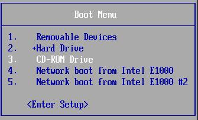
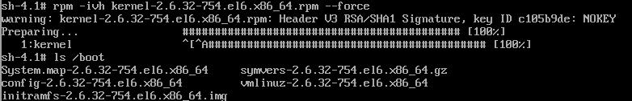
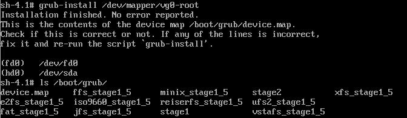
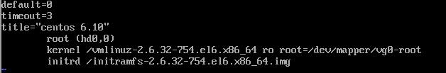
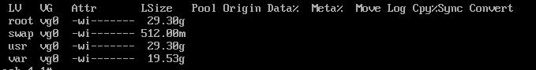
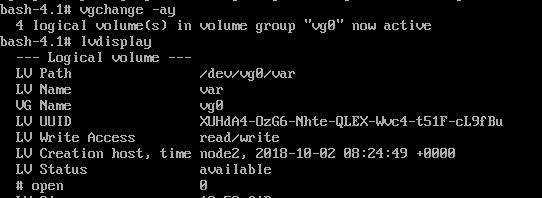
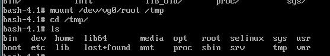
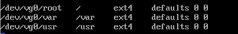

grub legacy
stage 1：mbr的前446字节
破坏之后，将无法引导系统，此时只能从其它启动介质启动系统，
stage 1.5：存放在磁盘MBR之后的扇区，让stage1中的bootloader能识别stage2所在的分区上的文件系统
注意：能看到启动菜单实际就已经过了1.5阶段了，进入2阶段
stage 2：一般是挂载至/boot/grub/目录下
根据stage2阶段文件定义内容找grub.conf文件然后根据这个文件里定义的内容找boot下的内vmlinuz…与驱动模块initramfs…，至此由bootloader到grub然后由grub加载内核文件与模块系统引导启动
注意：
硬盘设备能识别，并不代表硬盘上的文件系统能识别，因为文件系统是额外附加的一层软件组织的文件结构，所以要能够对接一种文件系统，必须要用到文件系统驱动；对应的应用程序必须能识别和理解这样的文件系统才可以，这种程序就称为文件系统驱动；grub的1.5阶段就是给gurb提供了文件系统驱动的，从而就能够访问对应的第二阶段和内核所在的分区了，这通常是一个基本磁盘分区；所以grub第二阶段以及内核和ramdisk文件通常都会放在一个基本磁盘分区上；因为grub驱动不了逻辑卷这种高级接口。
grub.conf配置文件
default=5
timeout=5
#password //明文加密
#password --md5 //使用grub-md5-crypt生成
#password --encrypted //使用grub-crypt生成
hiddenmenu
title
root (hd0,0)
kernel /vmlinuz ro root=/dev/sda2 可添加 许多内核支持使用的cmd参数
例如：max_loop=100 selinux=0 init=/path/to/init
initrd /initramfs.img
grub加密
grub-md5-crypt
grub-crypt
例：
破解root口令
启动系统时，设置其运行级别1
进入单用户模式：
1.编辑grub菜单(选定要编辑的title，而后使用a 或 e 命令)
2.在选定的kernel后附加
1, s, S，single 都可以
3.在kernel所在行，键入“b”命令
修改开机背景
图片分辨率为640X480
转换图片类型
which convert
rpm -qf /usr/bin/convert
convert -resize 640x480 -colors 14 文件 文件.xpm
gzip 文件.xpm
mv 文件.xpm.gz /boot/grub/
修改内核配置文件
vim /boot/grub/grub.conf
添加 splashimage=(hd0,0)/grub/文件.xpm.gz
重启查看
报错：Error19 kernel must be loade before initrd
救援模式e--》进入内核--》位置出错d删除initrd--》o增加一个新行--》e编辑
grub edit> initrd /initramfs-2.6.32-..
b重启
删除/boot/grub/grub.conf重启恢复
手动在grub命令行接口启动系统
grub> root (hd#,#)
grub> kernel /vmlinuz-VERSION-RELEASE ro root=/dev/DEVICE
grub> initrd /initramfs-VERSION-RELEASE.img
grub> boot
进入系统手写配置文件
破坏gurb的第一阶段及修复
破坏MBR引导grub分区表中的446个字节
hexdump -C /dev/sda -n 446
dd if=/dev/zero of=/dev/sda bs=1 count=446
方法：
未重启前使用本地修复
grub-install /dev/DISK boot所在分区磁盘
启动光盘的救援模式，之后使用grub-install命令修复，
grub-install --root-directory=DIR /dev/DISK
sync
注意：
默认在/boot/grub/目录下生效的文件只有grub.conf，其它的文件可以不存在，但如果用grub-install修复之后，此必须存在grub.conf和其它相关的文件，没有则无法引导系统
grub的1.5阶段后续的27个扇区，系统初始化是没有1.5阶段的扇区的可能在磁盘的其他位置，修复以后会在27个扇区中
备份及破坏MBR分区修复
备份
dd if=/dev/sda of=/root/mbr bs=1 count=446
破坏
dd if=/dev/zero of=/dev/sda bs=1 count=446
使用grub命令交互式修复
要指定/boot分区位置
grub
grub> root (hd0,0)
grub> setup (hd0)
查看是否修复
hexdump -C -n 446 /dev/sda
注意：此修复是有依赖的依赖于/boot/grub/下的文件，不成功可以用使用grub-install方法修复
界面为Error 15
救援模式grub-install
boot分区文件丢失的恢复步骤
1. 使用其它启动介质启动系统，进入系统的救援模式

2. 挂载启动介质目录至指定的目录
3. 安装内核文件
rpm -ivh /Package/kernel-Version-release.rpm --root /系统的根目录 --force

4. 修复grub
grub-install --root-directory=/系统的根目录 /根目录所在的分区

5. 生成grub.conf

/etc/fstab文件丢失且boot分区文件丢失(ext分区)
1. 使用其它启动介质启动系统，进入系统的救援模式
2. blkid，fdisk -l 查看现有的分区信息
3. 手动挂载根目录至指定的分区
4. 手动创建/etc/fstab
5. 重启
6. 其它步骤同上
/etc/fstab文件丢失且boot分区文件丢失(lvm分区)
1. 使用其它启动介质启动系统，进入系统的救援模式
2. 查看lvm的根分区目录
lvs

3. 激活lvm根分区
vgchange -ay

4. 手动挂载根目录至指定的分区

5. 手动创建/etc/fstab

6. 其它步骤同上
系统配置文件丢失
/etc/inittab丢失
在救援模式下执行：
1.有备份恢复
chroot /mnt/sysimage
cp /etc/inittab.bak /etc/inittab
2.无备份恢复
chroot /mnt/sysimage
rpm -qf /etc/inittab 查询到此文件来自initscripts包
exit 退出chroot模式
mount /dev/sr0 /mnt/source 挂载存放RPM包的安装光盘
rpm –ivh force /mnt/Packages/initscripts-9.03.49-1.el6.centos.x86_64.rpm
3.只提取RPM包中的/etc/inittab文件进行恢复
rpm2cpio /mnt/source/Packages/initscripts-9.03.491.el6.centos.x86_64.rpm| cpio -idv ./etc/inittab
cp etc/inittab /mnt/sysimage/etc
注意:此命令执行时不能将文件直接恢复至/etc目录，只能提取到当前目录下，且恢复的文件名称所在路径要写完整的路径。提取文件成功后，将其复制到根分区所在的/mnt/sysimage目录下相应位置即可